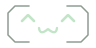
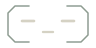
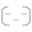
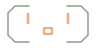
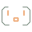

A little expression.
The same slim console.
Two related studies for NeedleBub’s accepted A2 layout.
Editable vectors, shown at their actual use sizes.

Faces: 96 × 48 and 32 × 32 px. Display copy always carries the state.
Resume
Reconnect access
Glyphs: 20 / 24 px. Labeled targets: 48 px tall.
Open Open expression in A2 →





Faces: 96 × 48 and 32 × 32 px. Display copy always carries the state.
Activity
Sources
Pause
Resume
Reconnect access
Glyphs: 20 / 24 px. Labeled targets: 48 px tall.
Open Quiet visor in A2 →Compare inside A2
Fictional, content-free activity. The prototype does not access notifications.